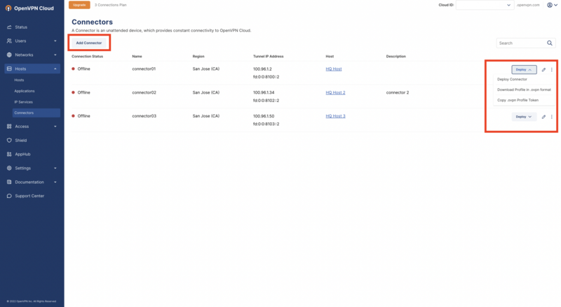
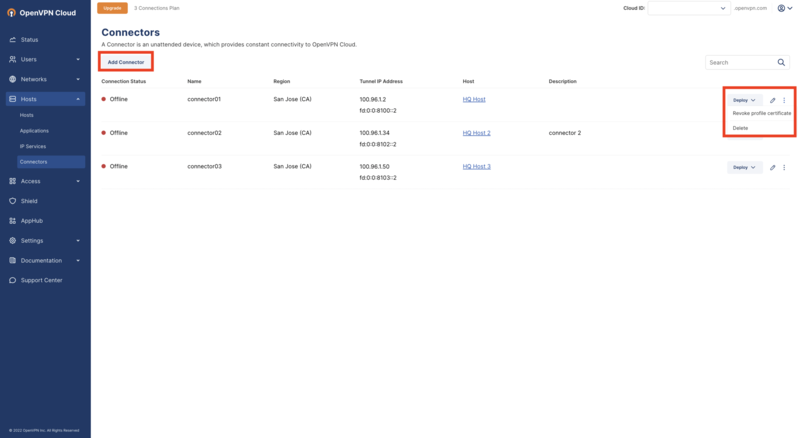
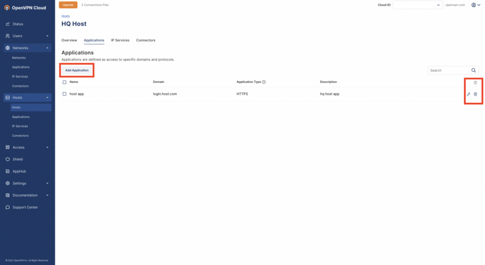
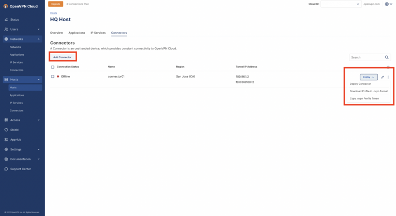
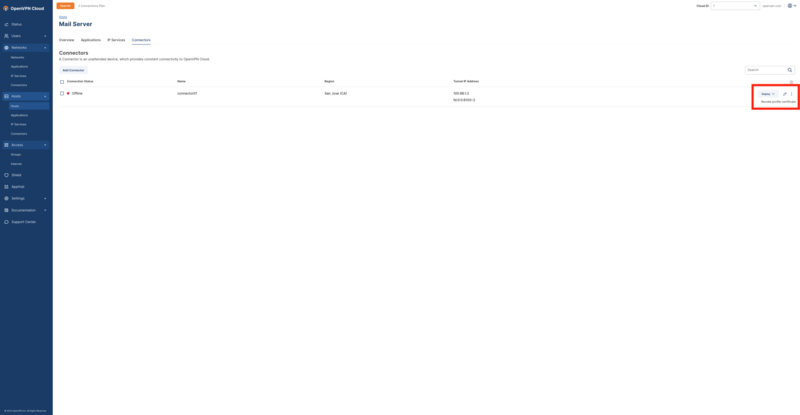

User Guide - Host Settings
Host list screen
Host settings enable Administrators to view, add, edit, and filter Hosts within a WPC account. You may view all Hosts within a WPC account from the Host list screen, or details about specific Hosts from the Overview tab.
Host list screen
The Host list screen is accessible from the administration portal by navigating to Hosts. This screen lists all Hosts within a tenant’s account, including:
Connection Status
Host Name
Domain Name of Application accessible by the Host
Internet Access status of the Host
Applications name
IP Services accessible by the Host
(Optional) Description
You may add, edit, delete or filter Hosts from this screen. To add a Host click the Add Host button. To edit, click the edit icon (pencil) of the Host to update. To delete, select the checkbox of the Host, then click the delete icon (trash can). To filter Hosts, click the filter icon (next to the delete icon), and select your filter.
Applications list screen
The Applications list screen is accessible from the administration portal by navigating to Hosts > Applications. This screen lists all Applications accessible to Hosts within a tenant’s account, including:
Application Name
Application Domain
Application Type (Protocols and Ports)
The Host associated to the Application
Optional Application Description
You may add, edit or delete an Application from this screen. To add an application to the Host click Add Application. To edit, click the edit icon (pencil) of the Application to update. To delete, click the delete icon (trash can) of the Application to be deleted.
IP Services list screen
The IP Services list screen is accessible from the administration portal by navigating to Hosts > IP Services. This screen lists all Host IP Services within a tenant’s account including:
IP Service Name
Service Type (Protocols and/or Ports)
Host associated to the IP Service
(Optional) IP Service Description
You may add, edit or delete an IP Service from this screen. To add an IP Service, click Add IP Service. To edit, click the edit icon (pencil) of the IP Service to update. To remove, click the delete icon (trash can) of the IP Service to be deleted.
Connectors list screen
The Connectors list screen is accessible from the administration portal by navigating to Hosts > Connectors. This screen list s all Host Connectors within a tenant’s account including:
Connection Status
Connector Name
Connector Region(s)
Tunnel IP Address (IPv4 and IPv6)
Host(s) the Connector is connected to
(Optional) Description
You may add, edit, or delete Connectors from this screen. To add a Connector, click Add Connector. To edit, click the Connector icon (pencil) to update. The Deploy drop-down menu allows:
Deploy Connector
Download Profile in .ovpn format
Copy .ovpn Profile Token
The kebab menu (three dots) allows:
Revoke profile certificate
Delete

Host Overview screen
To access a Host’s Overview screen from the administration portal, navigate to Hosts, and click the Host Name.
The Host Overview screen is a high-level summary of a selected Host configuration. The Overview screen displays:
Host connection Status
Host Name
Configured Host Domain name
Host Internet Access status
This Overview screen is segmented into 3 tabs:
Applications
IP Services
Connectors
To edit a Host, click Edit Host Details.
To delete the Host, click the kebab menu (three dots).
Applications tab
The Applications tab lists the Applications accessible to the selected Host and includes:
Application Name
Application Domain
Application Type (Protocols and/or Ports)
(Optional) Description
You may add, edit or delete an Application from this screen. To add an application to the Host click Add Application. To edit, click the edit icon (pencil) of the Application to update. To remove, click the delete icon (trash can), of the Application to be deleted.

IP Services tab
The IP Services tab lists the IP Services and Routes accessible to the selected Host and includes:
IP Service Name
Service Type
Optional Route Description
You may add, edit or delete an IP Service from this screen. To add an IP Service, click Add IP Service. To edit, click the item's edit icon (pencil) to update. To remove, click the delete icon (trash can) of the IP Service to be deleted.
Connectors tab
The Connector’s tab lists all Connectors connected to the selected Host and includes:
Connection Status
Download Profile in .ovpn format
Copy .ovpn Profile Token

The kebab menu (three dots) allows:
Revoke profile certificate
